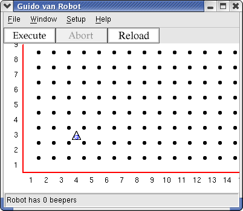

Guido van Robot can face in one of four directions, north, east, south, and west. He turns only 90 degrees at a time, so he can't face northeast, for instance. In Guido's world, streets run east-west, and are numbered starting at 1. There are no zero or negative street numbers. Avenues run north-south, and are also numbered starting at 1, with no zero or negative avenue numbers. At the intersection of a street and avenue is a corner. Guido moves from one corner to to the next in a single movement. Because he can only face in one of four directions, when he moves he changes his location by one avenue, or by one street, but not both! In this step we will create our first world, place Guido van Robot, and have the little guy take his first few steps.
Create a file step01.wld with this line:
Robot 4 3 N 0
This creates a world with Guido at 4th Avenue and 3rd Street, facing North. It should look like this:

There are many intersections where Guido can be in this world, since there are no walls other than those at the edge of the world. Remember, in Guido's world, an "avenue" runs north and south and a "street" run east and west.
Now create your first GvR program, calling it step01.gvr
move move move move turnoff
The instructions to Guido will be to move four spaces and then to turn off. Four small steps for a robot, one giant leap... never mind. Note that each command is on its own line.
Now load the world (.wld file) and the program (.gvr file) into GvR and test the code provided.
Make a world that has Guido start facing East in the lower left corner. Have him take three steps and turn off.
Hint: you may have to experiment with the numbers and letter after the word Robot in the world definition file to place him and face him facing the specified direction.
Copyright © 2003 Roger Frank.